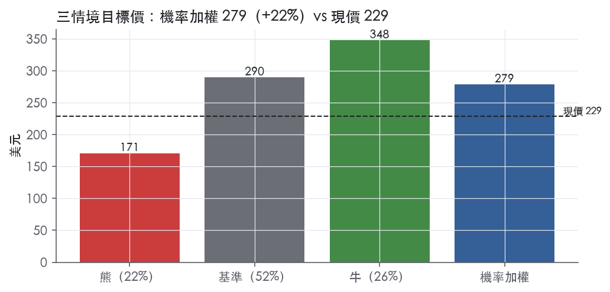
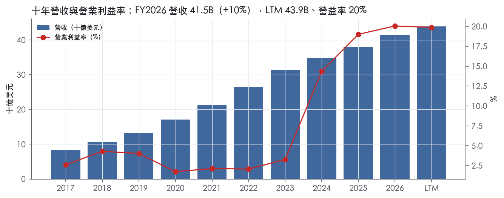
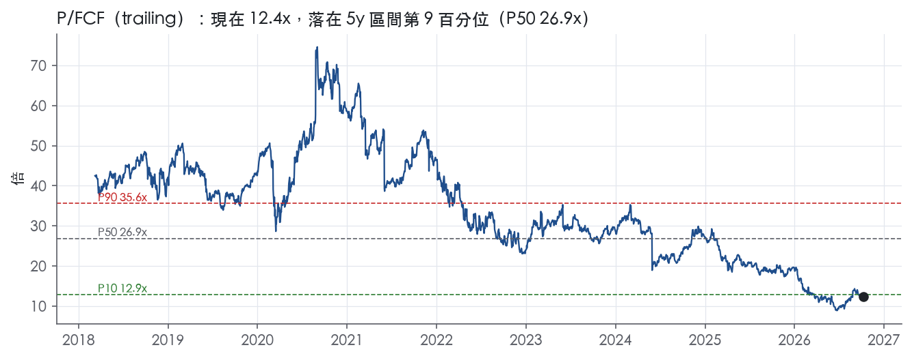
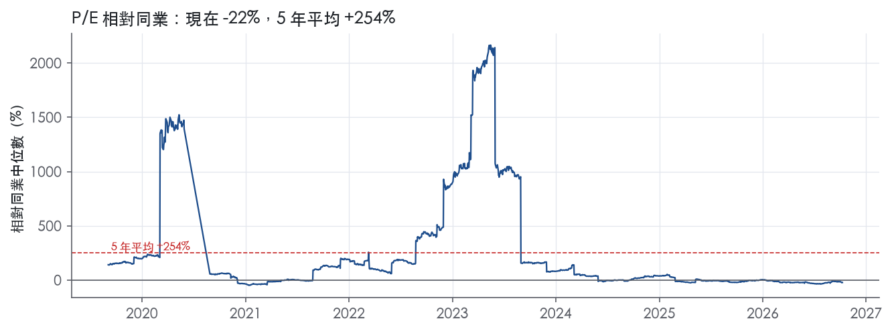
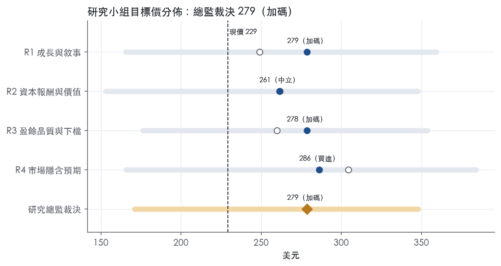
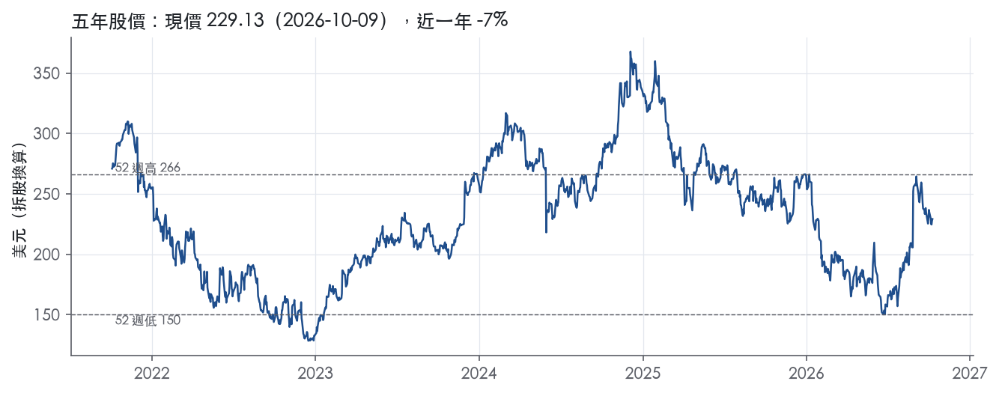

評等總表 › 資訊科技 › CRM
倍數持平、FCF成長補足，看多｜評等 加碼｜目標價 279
| 報告日 | 評等 | 目標價 | 當時股價 | 超額報酬 |
|---|---|---|---|---|
| 2026-10-09 | 加碼 | 279 | 229 | +12.2% |
| 評等 | 加碼（邊界，鄰近買進） |
| 12 個月目標價 | 279 美元 |
| 現價 | 229.13 美元（2026-10-09） |
| 預期報酬 | 股價 +21.6%＋股息 0.8%＝總報酬 +22.4%；同業籃門檻 10.2%，超額 +12.2% |
| 估值方法 | P/FCF 15.5x，套在第 5–8 季的自由現金流（也就是一年後的未來四季） |
| 三情境 | 熊 171／基準 290／牛 348 |
| 研究流程 | 四位研究員兩輪辯論＋研究總監裁決 |
| 資料來源 | SEC EDGAR XBRL、Tiingo、FRED（全免費） |
倍數持平、FCF成長補足，看多（研究總監裁決，四位研究員兩輪辯論後）
評等 加碼（邊界，鄰近買進）｜12 個月目標價 279 美元（總監三情境機率加權 279 與研究員中位數 279 各半）｜現價 229.13（2026-10-09）
預期報酬：股價 +21.6%＋股息 0.8%＝總報酬 +22.4%。同業籃門檻 10.2%，超額 +12.2%，離買進的分界不到三個百分點，屬邊界評等（落在其他級距的機率約三成）。
估值方法：P/FCF 15.5x，套在第 5–8 季的自由現金流（也就是一年後的未來四季）。三情境：熊 171（22%）／基準 290（52%）／牛 348（26%）。
什麼會讓研究總監改變看法：FY27Q3 cRPO（CC）跌破12%或FY28指引中點低於7%，代表有機再加速失敗，我轉中性、y2降到6%、倍數退到零報酬倍數12.9x附近；FY27Q3 10-Q D&A佔營收低於4.5%則D&A改回4.4%；ADSK/ACIW的P/FCF向ADBE收斂則是類股重評，熊情境升為基準。
| 過去四季（實際，FY2027Q2） | 未來四季 | 第 5–8 季 | 第 9–12 季 | |
|---|---|---|---|---|
| 營收（B） | 43.9B | 48.3B | 52.4B | 56.1B |
| 營收成長 | 11.2% | 10.0% | 8.5% | 7.0% |
| 營業利益率 | 19.9% | 20.0% | 20.5% | 21.0% |
| EPS（美元） | 10.93 | 8.51 | 9.87 | 11.25 |
| EPS 成長 | 58.8% | -22.2% | 16.0% | 14.0% |
| 每股股息（美元） | 1.71 | 1.71 | 1.71 | 1.71 |
| P/E（現價） | 21.0x | 26.9x | 23.2x | 20.4x |
| 股息殖利率（現價） | 0.8% | 0.7% | 0.7% | 0.7% |
過去四季為申報數字；預測為研究總監的假設、程式計算。倍數與殖利率都用現價計算，用來看現價對應各期獲利的高低。
| 情境 | 機率（歷史） | 故事 | 未來四季營收成長 | 第 5–8 季營益率 | 倍數 | 目標價 | 股價漲跌 |
|---|---|---|---|---|---|---|---|
| 熊 | 22%（20%） | 風險表第1條cRPO/續約放緩使Informatica滿週年後Y2只剩有機低速、第2條整合成本打在GAAP且回購讓位降槓桿，第4條ARR口徑擴大為早期訊號，倍數向ADBE體制靠近 | 8.0% | 19.0% | 10.5x | 171 | -25.4% |
| 基準 | 52%（44%） | 有機回到8–9%、GAAP營益率年擴50bp（攤銷與重組稀釋）、D&A隨攤銷稀釋降至5.5%、股數−3%，市場前瞻倍數不變 | 10.0% | 20.5% | 15.5x | 290 | 26.4% |
| 牛 | 26%（35%） | 有機回到兩位數、Agentforce轉成認列營收，個股折價收斂：倍數回到事後實現前瞻帶P10 17.2x，亦即同業trailing中位數17.0x（R3牛情境原值，不再上調） | 11.0% | 22.5% | 17.2x | 348 | 51.8% |
目標價由程式依研究總監的驅動與倍數計算；機率由研究總監給定。括號內是歷史頻率：把這檔股票過去十年 12 個月報酬的波動形狀，置中在基準情境，結果落在各情境附近的比例。

四位研究員用不同方法各自估值，回應研究總監的質疑後交出第二輪，最後由總監逐點裁決。各研究員的主張見第七章，裁決理由見第八章，完整論證見《研究底稿》。
| 立場（一輪→二輪） | 加權目標價（一輪→二輪） | 評等（一輪→二輪） | 第二輪倍數 | 熊～牛目標價 | |
|---|---|---|---|---|---|
| R1 成長與敘事 | 看多→看多 | 249→279 | 中立→加碼 | 17.0x | 165～359 |
| R2 資本報酬與價值 | 看多→中性 | 262→261 | 中立→中立 | 17.0x | 153～348 |
| R3 盈餘品質與下檔 | 中性→中性 | 260→278 | 中立→加碼 | 15.0x | 176～354 |
| R4 市場隱含預期 | 看多→看多 | 304→286 | 買進→買進 | 16.5x | 166～384 |
| 研究總監裁決 | 看多 | 279 | 加碼 | 15.5x | 171～348 |
目標價由程式依各自的驅動與倍數計算；評等＝機率加權總報酬 − 同業籃門檻。
Salesforce 是全球最大的 CRM（客戶關係管理）軟體供應商，以 AI 驅動的 Agentforce 360 Platform 將人、AI agent、應用程式與資料整合在單一平台上，協助企業轉型為「Agentic Enterprise」¹。公司主要以訂閱制（subscription）方式銷售給全球各規模企業，透過直接銷售團隊，也透過合作夥伴間接銷售¹。客戶橫跨幾乎所有產業，單一客戶占營收比重在 FY2026、FY2025、FY2024 都未超過 10%¹。LTM 營收 43.94B 美元、EBITDA 10.23B 美元，本質上是一家高毛利、訂閱制為主的企業軟體公司。
Salesforce 不依傳統「雲」分部揭露財報，而是以服務線敘述：Agentforce Sales、Agentforce Service、Agentforce 360 Platform／Slack／Other、Data 360、Informatica、Agentforce（agentic 層）、Marketing／Commerce、Integration（MuleSoft）／Analytics（Tableau）¹。Informatica 收購於 FY2026 第四季完成，大幅擴充公司的信任資料基礎建設¹。10-K 未揭露各服務線個別占營收比重。公司另揭露新的 AI 相關指標：Agentforce 與 Data 360 ARR 於 FY2027Q1 末接近 3.4B 美元、年增逾 200%，其中 Informatica Cloud ARR 1.1B 美元、Agentforce ARR 1.2B 美元（年增 205%）²；到 FY2027Q2 末，Agentforce 與 Data 360 ARR 接近 3.9B 美元、年增逾 210%，Agentforce ARR 超過 1.5B 美元、年增逾 240%³。這代表 AI／agentic 產品線正從低基數快速放量，但相對 FY2026 整體營收 41.52B 美元仍是小基數業務。
FY2026（截至 2026/1/31）整體營收 41.52B 美元、年增 9.6%，毛利率 77.7%、營益率 20.1%，顯示公司已從過去幾年併購驅動的費用擴張轉向明顯的利潤率擴張階段。
公司客戶數「從一到數十萬」付費訂閱不等，橫跨幾乎所有產業與全球各規模企業，無單一客戶或產品的重大依賴¹。銷售通路以直接銷售團隊為主，包含區域中心的銷售人員與貼近客戶的現場銷售人員，並輔以自助式銷售¹；另有合作夥伴網絡（全球顧問公司、系統整合商等）轉介銷售線索並協助成交，公司通常依據合作夥伴轉介客戶的首年訂閱收入支付佣金¹。10-K 未按地理區域揭露營收占比。產品線也延伸出針對特定產業的垂直解決方案（金融服務、醫療生技、製造、政府等）以及針對中小企業的 Starter Suite¹。
FY2026Q3（截至 2025/10/31）營收 10.26B 美元、年增 8.6%，營益率 21.3%，屬於承接年度成長放緩階段的一季。FY2026Q4（截至 2026/1/31）營收 11.20B 美元、年增 12.1%，成長明顯加速，同時公司完成 Informatica 收購，總債務跳升至 14.44B 美元反映併購與相關融資。
FY2027Q1（截至 2026/4/30）營收 11.1B 美元，年增 13%、CC 年增 12%，含 Informatica 貢獻 444M 美元；cRPO 336億美元、年增14%及CC年增13%；GAAP 營益率 21.1%，GAAP 稀釋 EPS 2.42 美元（年增 52%）²。公司當季啟動 250 億美元加速股票回購（ASR），首批交付 1.03 億股，約占預期回購總股數 80%，最終結算預計於 FY27 Q3²。公司並將 FY27 全年營收指引上修至 459–462 億美元，年增 11%²。
FY2027Q2（截至 2026/7/31）營收 11.35B 美元，年增 11%（CC 同為 11%），含 Informatica 貢獻 456M 美元；cRPO 成長加速至 CC 年增 14%；GAAP 營益率 20.5%，GAAP 稀釋 EPS 4.29 美元（年增 119%），主因包含稀釋股數下降與獲利結構改善³。公司再次上修 FY27 全年營收指引至 461–464 億美元，較前次上修 200M 美元（CC 300M 美元）³。CFO Robin Washington 表示：「NNAOV growth is the strongest it's been in four years, keeping us on track for second-half organic revenue reacceleration」³。公司並初次給出 FY27 Q3 營收指引 114.2–115 億美元，年增 11–12%，cRPO 成長指引約 14%³。
公司自陳的成長槳主要有四項：擴大既有客戶關係（透過跨售、升級多服務線採用）、擴大地理觸角（延伸全球銷售渠道至新區域與新客戶）、聚焦產業與新產品（持續推出垂直產業解決方案）、以及槓桿夥伴生態系（透過 AppExchange、ISV 與系統整合商加速進入新市場）¹。公司也明確表示，併購與策略投資是成長工具之一，評估標準包括能否加速策略、提供吸引力的客戶機會、具備變現路徑，並優先以資產負債表（現金與舉債）完成併購¹。CEO Marc Benioff 稱 AI 與 agentic 需求「across every layer of our platform」，且 AI 與資料產品 ARR 即將突破 4B 美元³。
公司現階段敘事已從「多雲交叉銷售」轉向以 Agentforce／Data 360／Informatica 為核心的 agentic AI 貨幣化故事，ARR 基數雖小但成長速度遠高於主體訂閱業務，是市場評價的主要焦點。FY2027 下半年的「organic revenue reacceleration」能否兌現，將取決於 Agentforce 與 Data 360 從 ARR 轉化為實質營收認列的速度，以及 Informatica、Contentful、Fin 等併購的整合節奏。250 億美元 ASR 顯示管理層在資本配置上傾向以回購支撐每股指標，但也推升了總債務與淨負債水位，需留意財務槓桿上升對自由現金流殖利率的稀釋效果。

Salesforce 的護城河評為「窄」，來源是企業客戶把流程、資料與權限規則建在平台上所形成的轉換成本，以及 AppExchange 開發者生態系帶來的間接網路效應。我們有把握 5 年以上的 ROIC 仍能守在資本成本之上，但沒有把握撐到 10 年，所以不給「寬」。過去十年帳面 ROIC 多數年份低於資本成本，這是不給「寬」的主因。趨勢判為「穩定」：利潤率紀律正把 ROIC 往上推，AI 原生競爭者則在侵蝕座位制的護城河，兩股力量大致抵銷。
轉換成本（主要來源）：客戶的營運邏輯已經寫進 Salesforce 的 metadata 與工作流程，換供應商等於重建整套前台系統。
網路效應（次要來源，間接型）：生態系的雙邊效應存在，但強度不如消費網路。
成本優勢（輔助）：多租戶架構的規模經濟有實證，但競爭對手同樣採用雲端架構，因此只能算輔助來源。
未列入的類別：無形資產與效率規模都不列入。
毛利率與 FCF 利潤率支持轉換成本的主張，帳面 ROIC 則不支持「寬」，這組衝突是評級停在「窄」的直接原因。
支持的證據：
衝突的證據：
維持「窄」而非下修為「無」的理由有兩點：
誠實的限制：
最大威脅是 AI 原生對手繞過座位制的工作流程，這直接衝擊轉換成本的來源。
目標倍數相對同業應該持平，不給溢價。轉換成本支撐的毛利率穩定性，足以證明 5 年期的現金流可見度；但帳面 ROIC 剛越過資本成本，加上併購與回購推高的債務，不足以支撐長於同業的高成長／高報酬存續期假設。歷史倍數帶的 P/E 5 年中位數 70.1x是建立在低獲利基期上，不應拿來當均值回歸的錨點。
| 指標 | 最新 | 十年平均 | 標準差 | 最低 | 最高 |
|---|---|---|---|---|---|
| ROIC | 10.9% | 4.9% | 3.9% | 0.9% | 10.9% |
| 毛利率 | 77.7% | 74.8% | 1.5% | 73.3% | 77.7% |
| 營業利益率 | 20.1% | 7.4% | 7.0% | 1.7% | 20.1% |
| FCF 利潤率 | 34.7% | 23.8% | 5.4% | 19.2% | 34.7% |
| ROE | 12.4% | 6.3% | 4.3% | 0.4% | 12.4% |
程式計算。資本成本代理值（10 年債＋5%）：10.2%；ROIC 平均減資本成本：-5.3%；ROIC 有資料的 9 年中，高於資本成本 2 年。
LTM 營業現金流／淨利 1.63x、自由現金流／淨利 1.57x，近三年平均更高（2.20x／2.08x），十年平均因早年淨利基數小而失真（9.79x／8.44x），不必當作基準【量化底稿】。應計比率 LTM -5.6%、近三年 -6.6%、十年 -7.2%，全部是負值，代表淨利長期低於應計推算的「紙上盈餘」，現金體質是正面訊號而非紅旗【量化底稿】。但要留意單季波動：FY2027Q2 營業現金流僅 1.27B、自由現金流 1.10B，遠低於同季淨利 3.53B（期別表），這與 FY2027Q1 的 6.70B／6.56B 形成強烈對比（期別表），屬於應收帳款與年度計費節奏造成的季間落差，須搭配下文應收帳款紅旗一起看。
FY27 全年 non-GAAP 營益率調整項：攤銷購入無形資產 4.4%、股權酬勞費用 9.0%、重組與收購相關成本 0.8%，GAAP 營益率 20.1% 加總後 non-GAAP 為 34.3%³。每股數據對應：GAAP 稀釋 EPS 全年指引 10.21–10.25，加回攤銷 2.45、SBC 4.96、重組與收購相關成本 0.42，扣除所得稅影響 1.37，得到 non-GAAP 16.67–16.71（8-K 2026-08-26）³。本季（Q2 FY27）GAAP 稀釋 EPS 4.29，年增 119%，non-GAAP 為 5.90，年增 103%（8-K 2026-08-26）³。我認為攤銷購入無形資產（Informatica 併購帶來）是真實的會計費用但非現金、可合理從估值角度打折處理；SBC 則是真實成本，本系統維持不加回的立場，這也是計分表紅燈的來源。重組與收購相關成本 0.8%／每股 0.42 偏一次性，但公司近年併購頻率高（Informatica、Contentful、Fin），「一次性」itself 有常態化傾向，估值時不宜完全視為非經常。
淨負債／EBITDA LTM 2.73x，相較近三年平均 -0.32x、十年平均 -2.27x 是明顯跳升（計分表燈號：黃）【量化底稿】，對應的是 FY2026Q4 到 FY2027Q1 總債務由 14.44B 跳升到 39.28B（期別表），時點與 Informatica 收購完成於 FY2026 第四季一致（10-K 稱 Informatica 收購於 FY2026 第四季完成）¹，應屬收購融資的一次性槓桿墊高而非營運惡化。利息保障倍數 LTM 8.92x，仍優於綠燈門檻 8.00x，即使舉債後付息能力尚未吃緊（計分表）【量化底稿】。股東回饋方面，（股利＋回購）／淨利 LTM 378.6%，遠高於淨利，反映公司持續執行 250 億美元加速股票回購（ASR），本季另返還股息 364M 美元給股東（8-K 2026-08-26）³；最終 ASR 結算預計於 2026 年 10 月完成（8-K 2026-08-26）³。稀釋股數年變動 -5.7%（LTM），也支持股數確實在減少（計分表）【量化底稿】，但注意回購資金來源已轉向舉債並非全靠自由現金流，這會壓縮未來槓桿空間。
SBC／營收紅燈（LTM 8.3%，近三年平均 8.3%）：這是真問題不是誤讀，8.3% 遠高於綠燈門檻 3.0%、也高於紅燈門檻 8.0%（計分表）【量化底稿】；公司 non-GAAP 指引把 SBC 9.0% 全額加回營益率（8-K 2026-08-26）³，本系統刻意不加回，因為 SBC 稀釋股東權益是真實經濟成本，在高 SBC 背景下 non-GAAP 盈餘明顯優於 GAAP。
淨利率跳動（FY2020→21 +18pp、FY2021→22 -14pp、FY2023→24 +11pp）：均可用一次性項目解釋但 10-K 節錄未提供具體明細數字，無法逐筆對應，此處只能依年度表格推論：FY2021 淨利 4.07B 相對 FY2020 的 0.13B 大幅跳升、FY2022 又回落至 1.44B（年度表），波動幅度大於同期 EBITDA 變化（FY2020 0.75B→FY2021 1.03B→FY2022 1.23B，年度表），顯示淨利波動主要來自營業線以下項目（如稅務、投資組合公允價值變動），而非核心業務现金流動能，屬於會計／非核心科目造成的假警報，不影響本章「中品質」判斷。
淨負債／EBITDA 黃燈：如上節所述，源自 Informatica 收購後舉債，屬於一次性併購融資而非經常性槓桿擴張，但 FY2027Q1 起總債務維持在 39.28B／39.29B 的高位（期別表），是否為新常態仍待下一輪財報確認。
應收帳款成長－營收成長 FY2026 +10.5pp 黃燈：計分表標示為黃燈，規則上 ≤5pp 綠、>15pp 紅，10.5pp 落在需解釋區間（計分表）【量化底稿】。10-K／8-K 節錄未提供應收帳款餘額明細，無法直接對應解釋，僅能從 FY2027Q2 單季營業現金流／自由現金流（1.27B／1.10B）遠低於淨利 3.53B 的落差（期別表）推論應有應收帳款或遞延收入時點因素，列為待觀察項目而非已排除的假警報。
估值應以 GAAP 盈餘為主要錨點並對 SBC 不做加回，因為 8.3% 的 SBC／營收比率是持續性真實成本，直接套用 non-GAAP EPS（16.67–16.71 全年指引）會高估自由現金流歸屬股東的部分。淨負債／EBITDA 2.73x 的槓桿跳升主因是 Informatica 收購融資，短期內不建議因此大幅壓低倍數，但若槓桿未隨現金流消化而回落，應視為限制 EV/EBITDA 倍數上緣的因素。現金轉換本身健康（CFO／淨利、FCF／淨利均 >1.5x），支持對核心盈餘品質給中性偏正評價，但應收帳款成長落後營收成長與單季自由現金流波動，建議在模型中對 LTM 淨利打 5–10% 的保守折扣再進行估值。
| 項目 | LTM | 近三年 | 十年 | 燈號 | 規則 |
|---|---|---|---|---|---|
| 營業現金流／淨利 | 1.63x | 2.20x | 9.79x | 綠 | ≥1.00x 綠、<0.80x 紅 |
| 自由現金流／淨利 | 1.57x | 2.08x | 8.44x | 綠 | ≥0.90x 綠、<0.60x 紅 |
| 應計比率（(淨利−CFO)／平均總資產） | -5.6% | -6.6% | -7.2% | 綠 | ≤0.0% 綠、>5.0% 紅 |
| SBC／營收 | 8.3% | 8.3% | 9.5% | 紅 | ≤3.0% 綠、>8.0% 紅 |
| 淨負債／EBITDA | 2.73x | -0.32x | -2.27x | 黃 | ≤1.50x 綠、>3.00x 紅 |
| 利息保障倍數（營業利益／利息） | 8.92x | 23.3x | 9.39x | 綠 | ≥8.00x 綠、<3.00x 紅 |
| 稀釋股數年變動 | -5.7% | -1.4% | 3.6% | 綠 | ≤0.0% 綠、>3.0% 紅 |
| （股利＋回購）／淨利 | 378.6% | 175.2% | 612.2% | 綠 | ≥50.0% 綠、<0.0% 紅 |
| 應收帳款成長 − 營收成長（FY2026） | +10.5pp | — | — | 黃 | ≤5pp 綠、>15pp 紅 |
程式計算；燈號以 LTM（無則近三年平均）判定。
| 風險 | 觸發指標（看什麼數字、在哪裡看） | 對 EPS 的影響方向與粗略幅度 | 未來 12 個月發生機率（高／中／低） | 出處 |
|---|---|---|---|---|
| 客戶不續約／消費型訂閱使用量低於預期，導致 cRPO 與營收成長放緩 | 每季 cRPO 年增率（最新 14% CC，8-K）、NNAOV、訂閱與支援營收年增率 | 負向，大：cRPO 增速若從 14% 降至個位數，營收指引隨之下修 | 中 | ⁵³ |
| 併購整合失敗（Informatica、Contentful、Fin）：未能實現預期效益、商譽減損、無形資產攤銷侵蝕 GAAP 利潤 | Informatica／Contentful／Fin 整合後的營收貢獻（目前 Informatica 每季約 440–456M 美元）、商譽減損公告、GAAP 與 non-GAAP 營益率缺口（目前缺口約 14.2 個百分點） | 負向，中～大：攤銷占 FY27 GAAP 營益率影響 4.4%（8-K guidance） | 中 | ⁵³ |
| 資安事件／服務中斷：客戶資料外洩或平台中斷導致賠償、客戶流失、監管罰款 | 8-K 資安事件揭露（SEC 規則要求重大資安事件須於 8-K 揭露）、客戶流失率、法律訴訟公告 | 負向，方向不定、幅度「大」：10-K 坦承過去已發生安全事件但尚無重大財務影響 | 低 | 10-K 年報 FY2026 Item 1A（風險因素） |
| AI／Agentforce 定價與打包策略未被市場廣泛接受，貨幣化不如預期 | Agentforce／Data 360 ARR 年增率（目前 Agentforce ARR 超過 1.5B 美元、年增逾 240%；需觀察此增速是否邊際遞減）、Agentic Work Units 用量 | 負向，中：若 ARR 增速趨緩，目前估值隱含的 AI 溢價將承壓 | 中 | ⁵³ |
| 舉債上升後的利率與再融資風險：Informatica Credit Agreements 全額動用 60 億美元，疊加 ASR 回購，淨負債上升 | 總債務（FY2026Q4 已跳升至 14.44B 美元、FY2027Q1/Q2 進一步升至約 39.28B／39.29B 美元，bs.total_debt）、利息費用、信用評等公告 | 負向，中：利息費用增加侵蝕淨利，但不影響營運面 EPS | 中 | 10-K 年報 FY2026 Item 1A（風險因素） |
客戶續約與消費型使用量風險排第一，因為它是公司商業模式的核心敏感點。10-K 明確指出客戶在合約到期後沒有續約義務，典型合約期為 12 到 36 個月，且公司「難以預測續約率」，續約率會受客戶滿意度、消費水準、定價調整及經濟下行影響⁵。最新一季 cRPO 年增 14%（CC）³，是近期加速的訊號，但這個指標的波動直接牽動營收指引——公司在 8 月已把 FY27 營收指引上修 200M 美元（CC 300M 美元），其中僅 100M 美元來自有機成長，其餘來自 Contentful／Fin 併購貢獻與 FX³，顯示有機成長的邊際貢獻其實有限。CFO 稱 NNAOV 增速是四年來最強，支撐「下半年有機營收再加速」的說法³，但這仍是管理層指引，尚未在財報數字中完全驗證。
併購整合風險緊追在後，因為公司近兩年的資本配置策略明顯轉向以資產負債表（現金與舉債）完成併購¹，Informatica 收購已於 FY2026Q4 完成，且公司動用了 Informatica Credit Agreements 下的全部 60 億美元額度來融資收購、償還 Informatica 既有債務並支付相關費用⁵。10-K 列出了一長串併購整合的具體風險項目，包括未能如期實現預期效益、技術安全漏洞、文化整合失敗、收購後的攤銷與股權稀釋對財報數字的侵蝕⁵。公司guidance 已經把攤銷對 GAAP 營益率的拖累量化為 4.4 個百分點（相對 non-GAAP 34.3%）³，這是 GAAP EPS 與 non-GAAP EPS 之間 6 美元以上差距的主要成因之一（FY27 guidance：GAAP 10.21–10.25 美元 vs non-GAAP 16.67–16.71 美元）³。Contentful 與 Fin 兩筆收購預計在 FY27 Q3 內分別完成交割，屬於尚未落地的變數³。
資安事件風險機率判斷為「低」，但一旦發生幅度會很大，因為公司商業模式的核心是客戶信任——10-K 花了大量篇幅描述資安威脅的來源（釣魚、勒索軟體、供應鏈攻擊、AI 被威脅者用於加速攻擊），並坦承「過去已發生且未來可能再發生安全事件」，雖然目前為止未發現對財務有重大影響的事件⁵。SEC 規則要求重大資安事件須在 8-K 揭露，這是可觀測的觸發點⁵。
AI／Agentforce 貨幣化風險是市場目前賦予 Salesforce 估值溢價的主要敘事來源，一旦增速放緩會立刻反映在倍數上。公司自己在 10-K 風險摘要中列出「AI 在我們產品中的開發、部署、使用或能力」帶來的社會、倫理與監管議題，以及「Agentforce 與 Data 360 的市場與貨幣化策略仍相對新且不確定，可能帶來額外風險與挑戰」⁵。目前 Agentforce ARR 超過 1.5B 美元、年增逾 240%，Agentforce 與 Data 360 合計 ARR 接近 3.9B 美元、年增逾 210%³，但這個基數相對 FY27 guidance 中點約 46.25B 美元的總營收仍很小，未來能否持續這個增速、能否轉化為實質營收認列是觀察重點。
舉債與利率風險排在最後，因為它影響的是財務費用而非營運利潤，殺傷力相對可控但方向明確。FY2026Q4 總債務從前幾季的 8.4B 美元跳升至 14.44B 美元，FY2027Q1、Q2 又進一步跳升至約 39.28B、39.29B 美元，反映 Informatica 收購融資與後續資本運作。10-K 在風險摘要中列出「我們的債務償還義務、租賃承諾及其他合約義務」為財務風險項目之一⁵。目前市場利率環境（美國十年期公債 5.22%）對再融資成本不利。
ASR（250億美元加速股票回購）的股數稀釋時點與真實成本尚未完全入帳。公司在 FY27Q1 啟動 250 億美元加速股票回購，首批交付約 1.03 億股，約占預期回購總股數 80%，最終結算原訂於 FY27Q3、後更新為 2026 年 10 月³。guidance 中的 EPS 計算僅反映首批交付股數的減少，不包含最終結算及 Q3–Q4 可能的公開市場回購對股數的影響³。這意味著目前市場看到的 EPS 成長（例如 FY2027Q2 GAAP 稀釋 EPS 年增 119%）有一部分是股數減少的機械效果，而非營運利潤真實改善，一旦最終結算價格與股數落定，EPS 的可比性需要重新檢視。
舉債後的財務槓桿是否會壓縮未來資本配置彈性（併購 vs 回購 vs 股息）。公司總債務在 FY2026Q4 後急遽上升至約 39B 美元水準，同時仍在進行 250 億美元 ASR 並持續支付股息（FY2027Q2 單季配發股息 364M 美元，8-K 2026-08-26）。10-K 雖提及債務償還義務是風險項目，但未具體量化舉債後對未來併購彈性或股東回饋政策的排擠效應，這是財報數字之外需要持續追蹤淨負債／EBITDA 比率變化的地方。
現價 229.13 對應 trailing（過去四季）P/E 21.0x、EV/EBITDA 21.1x、EV/EBITA —、EV/Sales 4.9x、FCF 殖利率 8.1%。主要估值倍數 P/FCF 現在 12.4x，落在5 年區間第 9 百分位（P10／P50／P90 = 12.9x／26.9x／35.6x）。

把程式的機械基準預測放到現價下，市場付的前瞻倍數是：P/FCF（未來四季） 14.7x、P/E（未來四季） 25.0x、P/FCF（第 5–8 季） 12.9x、P/E（第 5–8 季） 21.9x。反推 DCF 顯示市價隱含未來五年營收年成長 10.6%（WACC 9.0%、終值成長 3.0%、FCF 利潤率 18.6%，SBC 不加回）。
| 倍數 | 現在 | 5 年 P10 | 5 年 P50 | 5 年 P90 | 現在分位 | 全期 P50 |
|---|---|---|---|---|---|---|
| P/E | 21.0x | 23.9x | 70.1x | 554.3x | 3.1% | 112.7x |
| EV/EBITDA | 21.1x | 20.1x | 46.6x | 142.1x | 11.7% | 96.2x |
| EV/EBIT | 24.7x | 23.0x | 56.8x | 737.5x | 12.0% | 188.5x |
| EV/Sales | 4.9x | 4.5x | 6.4x | 8.6x | 15.5% | 7.9x |
| P/S | 4.3x | 4.3x | 6.5x | 8.7x | 8.9% | 7.8x |
| P/FCF | 12.4x | 12.9x | 26.9x | 35.6x | 8.5% | 32.4x |
trailing 倍數（股價 ÷ 過去四季）；分位以每個交易日計算。
同業籃：ADBE, ADSK, TEAM, ACIW, BSY, BILL（SIC 7372 同業 39 家中，CY2025 營收最接近的 6 家）。評等門檻 10.2%：同業「倍數不變下持有一年」的隱含報酬中位數（＝ FCF 殖利率 ×(1＋g)＋g，g 為 5 年營收年複合成長並夾在 −2%～8%），每家夾在 0～15%、P/E 低於 5 倍視為資料可疑而排除，中位數再限制在 10 年債到 10 年債＋5% 之間（同業原始中位數 13.5%）。
| 代號 | 市值 | 5 年營收 CAGR | 營益率 | ROIC | P/E | 5 年 P/E 中位數 | EV/EBITDA | P/FCF | 隱含報酬 |
|---|---|---|---|---|---|---|---|---|---|
| CRM | 188.1B | 14.3% | 19.9% | 10.9% | 21.0x | 70.1x | 21.1x | 12.4x | 16.7% |
| ADBE | 94.7B | 13.1% | 35.7% | 111.5% | 13.6x | 37.4x | 9.0x | 8.9x | 20.1% |
| ADSK | 49.7B | 13.7% | 26.2% | 149.2% | 30.5x | 55.2x | 21.0x | 17.5x | 14.2% |
| TEAM | 53.8B | 25.8% | 0.2% | 6.6% | — | — | 354.6x | 40.8x | 10.6% |
| ACIW | 5.1B | 6.3% | 18.6% | 11.4% | 23.4x | 25.4x | 13.3x | 16.5x | 12.8% |
| BSY | 11.2B | 13.4% | 23.6% | 12.3% | 38.6x | 66.2x | 28.2x | 22.4x | 12.8% |
| BILL | 4.1B | 47.3% | -4.4% | -2.1% | — | — | — | 10.0x | 18.8% |
| 同業中位數 | 13.5% | 21.1% | 11.8% | 26.9x | 46.3x | 21.0x | 17.0x | 10.2% |
全部 trailing，程式以各公司 SEC XBRL 與 Tiingo 行情計算；第一列為本檔。
P/E 相對同業中位數：現在 -22.2%，過去 1 年平均 -16.9%、3 年 14.5%、5 年 253.8%；EV/EBITDA 相對同業中位數：現在 0.8%，過去 1 年平均 -0.5%、3 年 8.7%、5 年 85.2%。

事後實現前瞻倍數帶（P/FCF，2018-09-17..2025-09-15）：P10／P50／P90 = 17.2x／25.8x／40.7x。它是每個交易日的股價除以之後四季實際實現的指標；一年後，今天的第 5–8 季正是那時的未來四季，所以這條帶是 12 個月目標價的同口徑倍數。因為用的是事後實際而非當時預期，過去成長超乎預期的公司這條帶會偏低。
程式的機械基準（成長率從過去四季年增率三年收斂到 6%、利潤率持平）用 事後實現前瞻 P/FCF P50 估值得到 457（99.4%），市場現行前瞻倍數（現價 ÷ 基準 未來四季指標）一年後持平，套在基準 第 5–8 季指標得到 275。這兩個數字只是參考點，不是本報告的目標價；研究員對這個定價的回應在第七章。
下表是每位研究員第一輪（各自獨立）與第二輪（回應研究總監的質疑後）的結果。目標價全由程式依各自的假設計算。
| 立場（一輪→二輪） | 加權目標價（一輪→二輪） | 評等（一輪→二輪） | 第二輪倍數 | 熊～牛目標價 | |
|---|---|---|---|---|---|
| R1 成長與敘事 | 看多→看多 | 249→279 | 中立→加碼 | 17.0x | 165～359 |
| R2 資本報酬與價值 | 看多→中性 | 262→261 | 中立→中立 | 17.0x | 153～348 |
| R3 盈餘品質與下檔 | 中性→中性 | 260→278 | 中立→加碼 | 15.0x | 176～354 |
| R4 市場隱含預期 | 看多→看多 | 304→286 | 買進→買進 | 16.5x | 166～384 |
| 研究總監裁決 | 看多 | 279 | 加碼 | 15.5x | 171～348 |
目標價由程式依各自的驅動與倍數計算；評等＝機率加權總報酬 − 同業籃門檻。
分歧度：第一輪 加權目標價 249～304（區間＝現價的 24%）· 倍數 14～17x · 立場 看多×3、中性×1；第二輪 加權目標價 261～286（區間＝現價的 11%）· 倍數 15～17x · 立場 看多×2、中性×2。

| 研究員 | 第二輪主張 | 堅持的理由 |
|---|---|---|
| R1 成長與敘事 | 看多，自由現金流倍數 17x，取同業中位數。 | 利率是全市場因素，門檻已反映，他不把倍數壓到現行以下。 |
| R2 資本報酬與價值 | 中性，自由現金流倍數 17x，取同業中位數。 | Adobe 基本面不同，他的基準倍數不向 8.9x 收斂。 |
| R3 盈餘品質與下檔 | 中性，自由現金流倍數 15x，市場現行倍數持平。 | 第二季 EPS 跳升來自營業外收益，EPS 不能用來驗證估值。 |
| R4 市場隱含預期 | 看多，自由現金流倍數 16.5x，略低於歷史下緣 17.2x。 | 市場不信併購退場後的有機成長，他認為市場太悲觀。 |
每位研究員的逐條回應與完整論證見《研究底稿》（CRM_研究底稿_2026-10-12.docx）。
| 分歧點 | R1 | R2 | R3 | R4 | 什麼資料會分出勝負 |
|---|---|---|---|---|---|
| 1. 有機成長路徑（rev_growth_y1/y2/y3） | 10.5／9.0／8.5%：有機 8pt＋併購 2.5pt | 9.5／7.0／6.0%：上修 200M 只有 100M 有機 | 基準 9.5／7.7／6.0% | 11.0／9.0／8.0%：有機 9pt | 2026-12 初 FY27Q3 的 cRPO（CC）與扣掉揭露 Informatica 貢獻後的有機成長；2027-03 FY28 首份指引 |
| 2. 一年後的倍數與口徑（multiple） | 17x@ntm，同業 trailing 中位數（相對市場持平 +37%） | 同 R1 | 15x@q5_q8，不重新評價（−3%） | 16.5x@q5_q8，前瞻帶 P10 下方（+6%） | 兩個時點之後個股折價是否收斂；ADSK／ACIW 的 P/FCF 是否向 ADBE 8.9x 收斂（類股重評 vs 個股） |
| 3. GAAP 營益率擴張（op_margin_y2） | 21.0%（y3 21.5%） | 21.0%（y3 21.5%） | 20.0% 持平 | 21.0%（y3 22.0%） | FY27Q3 GAAP 營益率與毛利率；FY28 營益率指引 |
| 4. FCF 加回項（da_pct_rev、sbc_pct_rev） | 6.0%／9.0% | 4.4%／9.0% | 6.0%／9.0% | 3.4%／8.3%（回基準） | FY27Q3 10-Q 現金流量表的折舊攤銷、SBC 兩行佔營收比 |
1. 有機成長：own，y1 10.0%、y2 8.5%、y3 7.0%。 我看得到四人各只看到一部分的 8-K。Q3 營收指引 11–12% 含「略高於 4pts」Informatica³，隱含 Q3 有機成長在 7–8% 一帶（推論，假設）；Informatica 於 FY2026Q4 併入（10-K Item 1，業務概況章），FY27Q4 起無機貢獻逐季歸零，Contentful 與 Fin 約補 1pt（R1、R4 的拆法，假設），所以 NTM 10% 已是上緣，R4 的 11% 要有機 9pt，和 Q3 指引對不上。y2 才是真正的分歧，因為 Q5–Q8 幾乎全是有機。支持再加速的證據：cRPO 33.5B、年增 14% CC，Q3 cRPO 指引約 14% 且不含 Contentful／Fin，NNAOV 四年最強³，cRPO 領先營收二到四季。反方（R2）：上修 200M 只有 100M 有機、FCF 成長指引僅 4–5%【同上】。R2 的缺口是忽略 cRPO 已連兩季加速；R1、R4 的缺口是 cRPO 的 14% 也含 Informatica（R1 自己承認），有機 cRPO 低於 14%，給 9% 等於要求全部轉成營收。我取 8.5%：高於基準 7.7%，因為領先指標確實上行；不到 9%，因為 Agentforce ARR 口徑在 Q2 擴大（納入 Slackbot、Headless 360³），ARR 到認列營收的轉換率還沒驗證。y3 不跟 R1 的 8.5%，三年維持加速沒有材料支持。
2. 倍數：own，15.5x FCF @ q5_q8。 先拆口徑：R1／R2 的 17x 套 ntm（一年後的 trailing），R3／R4 的 15–16.5x 套 q5_q8（一年後的前瞻），中間差的就是一年的 FCF 成長，所以四人目標價 266–289（程式表）其實是同一句話的兩種寫法。差別在敘述：R1／R2 說「個股折價收斂到同業 trailing 中位數 17.0x」，程式換算相對市場持平 +37%；R3 說不重新評價。我取 R3 的原則、程式的數字：市場現行前瞻倍數（現價 ÷ 基準 NTM FCF）15.5x 一年後持平（基準模型參考點）。理由：十二月與三月兩個觸發點是雙向的，在證據出來前基準情境不該預付折價收斂，收斂放進牛情境；R4 多出的 +6% 要靠十二月才會有的資訊。R1／R2 的錨另有兩個問題：同業中位數樣本含 TEAM（營益率 0.2%）與 BILL（負利潤）；唯一同量級席位制同業 ADBE 只有 8.9x（同業表），類股正在被重新定價，CRM 回到小型垂直軟體中位數不是必然。我低於事後實現前瞻帶 P10 17.2x的理由是個股與類股因素：帶的樣本期是成長從 28.7% 降到 8.7%、資產負債表為淨現金的年代（年度表 FY2025 淨負債 −5.60B），現在是淨負債 27.89B加上 ADBE 8.9x 的類股體制。R1 拿 10 年債 5.22當不取 3y P50 21.0x 的第三個理由，這條劃掉——門檻與現價已反映利率，他前兩個理由（槓桿、SBC）就夠。
3. 營益率：own，y1 20.0%、y2 20.5%、y3 21.0%。 擴張派（R1、R2、R4）沒用的證據：毛利率從 FY2026Q2 的 78.1% 降到 FY2027Q2 的 76.7%；FY27 全年 GAAP 營益率指引 20.1%³低於上半年的 21.1%、20.5%，下半年必然低於 20%，y1 只能給 20%。持平派（R3）的缺口：非 GAAP 營益率維持 34.3%，攤銷 4.4% 與重組 0.8% 是金額固定、會被營收稀釋的項目【同上】，三年完全不擴張也不合理。年擴 50bp 是兩者之間有證據支撐的幅度。
4. 加回項：growth（R3 同），D&A 6.0%、SBC 9.0%、資本支出 1.5%。 基準的 D&A 3.4% 來自口徑不一致的 EBITDA（FY2026Q4 推導 EBITDA 0.56B 低於該季營業利益，期別表），R1、R3 的指認正確，凡以資料包 EBITDA 為分母的比率我都不採用。8-K 單攤銷就佔營收 4.4%，D&A 不可能是 3.4%。R4 回到 3.4% 是為了和 SBC 一致而保守，但一致性要建立在正確數字上：兩個加回項都用公司指引（攤銷 4.4%＋以資本支出 1.5% 代理折舊＝6.0%，假設；SBC 9.0%）；R2 的 4.4% 漏掉折舊。SBC 的真實成本不在倍數上扣（錨帶樣本期 SBC／營收 10.3–10.5%，年度表 FY2020–FY2023，比現在重），由股數 −3% 與不給溢價承擔。稅率取 22%（FY27 GAAP 指引 22.3%、長期非 GAAP 20.5%³，假設）。股數 −3%：ASR 最終結算在 2026 年 10 月、落在 NTM 內，其後回購讓位降槓桿（總債務 39.29B）。
漂移： 第二輪無退回項目。程式未標記任何人；R4 向中位數靠攏 41% 全部來自 D&A 回到基準值，是我在 E3 要求、附了證據的一致性修正，我在分歧 4 用實質理由推翻，不當漂移處理。R1 加權目標價上升 11.9% 是脫離中位數。R4 問的反推 DCF 18.6% 口徑，材料未定義，它是程式固定參數，不作為市場信念，裁決不依賴它。
與基準不同的驅動：
目標倍數：15.5x P/FCF，套在 Q5–Q8。錨＝程式的「市場現行前瞻倍數一年後持平」參考點（基準模型：15.5x → 275）。口徑：q5_q8 配事後實現前瞻帶，我在 P10 17.2x 之下、零報酬倍數 12.9x 之上。相對同業：不給溢價（護城河章「窄」），也不假設收斂到同業 trailing 中位數 17.0x；相對同業 P/E 折價 −22.2%（3 年平均 +14.5%，同業表）的收斂放在牛情境。基準模型的 457／419 是自家歷史 P50 的均值回歸，我整個拒絕：那是成長體制與資產負債表都不同的年代。
機率從歷史出發：這檔股票十年 12 個月報酬上漲比例 69%，置中分布 P10 −40%、P90 +31%。我的牛熊距離與 R3／R4 第二輪相近（牛在基準上方三成多、熊在下方約四成，假設），程式對他們的歷史對照是牛區 28–32%、熊區 19–22%。我取 28／50／22：熊比歷史上緣多 0–3 個百分點，理由是風險表第 1、2 條都有日期（2026-12 初 Q3 財報、2027-03 FY28 指引、FY27Q3 內 Contentful／Fin 交割），不足以偏離 10 個百分點。牛高於熊，和歷史一致；本部門 22 份報告全部熊高於牛，這份不延續。
差在 FCF 的基數與有機成長的持續性，不在倍數：我們把市場現行前瞻倍數持平，升幅全部來自驅動。市場對基準 NTM FCF 付 14.7x、trailing 12.4x 落在自家 5 年帶 8.5% 分位（估值劇本），等於定價「併購退場後有機成長撐不住」；我們認為 cRPO 14%、NNAOV 四年最強已指向相反方向，而基準模型本身低估 FCF（D&A 用壞資料、SBC 用舊值）、高估稅率優勢與縮股，兩邊抵銷後仍偏低。立場看多，與程式評等一致（由程式確認）；門檻 10.2% 來自同業籃，CRM 自己的隱含報酬 16.7%（同業表）已在門檻之上，倍數不動也應跨過。
程式檢查發現，總監最初裁決的機率加權目標價 298 落在四位研究員第二輪區間 261～286 之外，可能是逐點選邊的拼湊效應。總監複核後決定修正（最終 279）：三處同向偏差：(1) 營益率擴張靠攤銷稀釋，卻把 D&A 固定在 6.0% 未稀釋，FCF 重複計算約 0.5pt 營收，D&A 改 5.5%；(2) 基準否定事後實現前瞻帶，牛情境卻用該帶 P25 19.4x，改回 R3 原本的 P10 17.2x；(3) 牛機率 28% 高於歷史 26%，改 26／52／22。成長、基準倍數、稅率、股數不動。
逐一比對我的驅動與四位研究員，有兩個地方不自洽，一個地方整體傾斜：
（a）營益率擴張與 D&A 6.0% 重複計算。 我在分歧 3 讓 GAAP 營益率年擴 50bp，理由是「非 GAAP 維持 34.3%，攤銷 4.4% 與重組 0.8% 是固定金額、會被營收稀釋」——換句話說，擴張幾乎全部來自非現金的攤銷佔比下降。但在分歧 4 我又把 D&A 固定在 6.0%（攤銷 4.4%＋折舊 1.5%）套到 Q5–Q8。攤銷佔比若真的被稀釋，Q5–Q8 的攤銷只剩約 4.0%，D&A 應為 5.5% 左右；我同時拿了「攤銷稀釋帶來的營益率」和「攤銷未稀釋的加回項」，FCF 被高估約 0.5pt 營收。這就是我基準比 R3（D&A 6.0%、營益率持平）和 R4（營益率擴張、D&A 3.4%）都高的機械原因：我各取了兩人對 FCF 有利的那一半。
（b）牛情境用了我自己在基準裡否定的錨。 我拒絕事後實現前瞻帶作為基準錨，理由是「樣本期成長 28.7%→8.7%、淨現金年代，體制已變」；卻在牛情境把倍數從 R3 的 P10 17.2x 上調到 P25 19.4x，等於宣稱體制在牛情境會變回去。同一條帶不能基準說不適用、牛情境說適用。結果我的牛（399）高於四人任何一個牛（348–384），來源標「quality」但其實已不是 R3 的情境。
（c）整體傾斜。 基準 295 高於四人基準（266–289）、牛 399 高於四人牛、熊 174 是四人中第二溫和的熊（取自 R3，R3 恰好是 D&A 6.0% 加持平營益率，熊也最軟），機率再給牛 28%（高於歷史 26%）。成長 10/8.5/7 本身落在中位數附近、稅率 22% 與股數 −3% 比基準保守，這兩項沒有偏，但擋不住前面三處同向偏差。
成長路徑、15.5x 基準倍數、稅率、股數不動。修正後基準應落回 R3 與 R4 之間、牛落回 R3／R4 的牛區間內，熊略降；立場仍看多，評等由程式重算。
現價 229.13 → 點估目標價 290 → 機率加權目標價 279 → 目標價 279，差距拆成五段：成長順延 +46 美元（市場現行倍數 15.5x 一年後持平、獲利照機械基準）；倍數差 +0 美元（總監倍數 15.5x vs 市場持平倍數 15.5x，同一機械基準預測）；盈餘差 +15 美元（總監預測的第 5–8 季自由現金流 14.4B vs 機械基準 13.1B，同一倍數）；情境不對稱 -11 美元（機率加權減點估）；研究小組平均 -0 美元（總監機率加權 279 與研究員第二輪中位數 279 各半）。各段相加等於目標價減現價。本階段未接賣方共識，差距以市場隱含預期為對照。
| 驅動 | 機械基準 | 研究總監 | 差異 |
|---|---|---|---|
| 未來四季營收成長 | 9.5% | 10.0% | +0.5 pp |
| 第 5–8 季營收成長 | 7.7% | 8.5% | +0.8 pp |
| 第 9–12 季營收成長 | 6.0% | 7.0% | +1.0 pp |
| 未來四季營益率 | 19.9% | 20.0% | +0.1 pp |
| 第 5–8 季營益率 | 19.9% | 20.5% | +0.6 pp |
| 第 9–12 季營益率 | 19.9% | 21.0% | +1.1 pp |
| D&A／營收 | 3.4% | 5.5% | +2.1 pp |
| 資本支出／營收 | 1.4% | 1.5% | +0.1 pp |
| SBC／營收 | 8.3% | 9.0% | +0.7 pp |
| 稅率 | 16.7% | 22.0% | +5.3 pp |
| 股數年變動 | -5.0% | -3.0% | +2.0 pp |
研究總監只寫偏移，未寫的沿用基準。
| 期 | 營收 | 成長 | 營益率 | 營業利益 | EBITDA | EBITA | 淨利 | EPS | FCF | 期末淨負債 |
|---|---|---|---|---|---|---|---|---|---|---|
| 未來四季 | 48.3B | 10.0% | 20.0% | 9.7B | 12.3B | 9.7B | 6.8B | 8.51 | 13.1B | 51.4B |
| 第 5–8 季 | 52.4B | 8.5% | 20.5% | 10.8B | 13.6B | 10.8B | 7.6B | 9.87 | 14.4B | 73.6B |
| 第 9–12 季 | 56.1B | 7.0% | 21.0% | 11.8B | 14.9B | 11.8B | 8.4B | 11.25 | 15.7B | 94.4B |
程式依上表的驅動計算；季度用最近四季季節性分攤；不含營運資金變動。
估值方法：P/FCF 15.5x，套在第 5–8 季的自由現金流（也就是一年後的未來四季）。研究總監目標倍數的錨：程式「市場現行前瞻倍數一年後持平」參考點15.5x；低於事後實現前瞻帶P10 17.2x是因成長體制轉變、淨負債27.89B與類股ADBE 8.9x，非利率；不假設收斂到同業trailing中位數17.0x，該收斂放牛情境。
計算：自由現金流（第 5–8 季） 14.4B × 15.5x＝權益價值 223.8B，除以第 5–8 季的股數 → 點估目標價 290（26.4%）；隱含 P/E（未來四季）34.0x、P/E（第 5–8 季）29.4x、EV/EBITDA（第 5–8 季）20.2x、FCF 殖利率（第 5–8 季）6.5%。
總監三情境機率加權目標價 279，研究員第二輪中位數 279，兩者各半＝目標價 279；預期報酬 股價 +21.6%＋股息 0.8%＝總報酬 +22.4%；減評等門檻 10.2%（同業籃隱含報酬中位數（ADBE, ADSK, TEAM, ACIW, BSY, BILL））＝超額報酬 +12.2% → 評等 加碼（超額 >+15% 買進、+5～+15% 加碼、±5% 中立、−5～−15% 減碼、<−15% 賣出）。同一份資料重開研究小組，超額約有正負四個百分點的雜訊（一個標準差，二十檔實測）；以此估計，評等落在其他級距的機率約三成。超額離買進的分界不到三個百分點，應視為邊界評等。
| 情境 | 機率 | 未來四季成長 | 第 5–8 季成長 | 第 5–8 季營益率 | 自由現金流（第 5–8 季） | 倍數 | 目標價 |
|---|---|---|---|---|---|---|---|
| 熊 | 22% | 8.0% | 5.0% | 19.0% | 13.1B | 10.5x | 171 |
| 基準 | 52% | 10.0% | 8.5% | 20.5% | 14.4B | 15.5x | 290 |
| 牛 | 26% | 11.0% | 10.0% | 22.5% | 15.6B | 17.2x | 348 |
| 主張 | 驗證日 | 看哪個數字 | 門檻 |
|---|---|---|---|
| FY27Q3 cRPO 年增（CC）維持加速態勢 | 2026-12-10 | cRPO 年增率（CC，8-K） | >= 13% |
| D&A 佔營收顯著高於基準的 3.4%，與攤銷4.4%＋折舊代理一致 | 2026-12-15 | FY27Q3 10-Q 現金流量表折舊＋攤銷（含購入無形資產）÷ 當季營收 | >= 5.0% |
| FY2027 自由現金流達公司指引下緣，8.1% 殖利率的現金基礎成立 | 2027-03-15 | 相對 年增率 | >= 4% |
| FY28 首份營收指引顯示併購退場後有機成長延續 | 2027-03-15 | FY28 營收指引中點年增率 | >= 8.5% |
到期由程式結算（第 5 階段帳本）。
內文上標數字對應下列公司申報文件；未標上標的分析與判斷，是研究小組的觀點。報告中的每個數字都經程式逐一核對資料包或原文。
| 期 | 營收 | 成長 | 毛利率 | 營益率 | EBITDA | 淨利 | EPS | CFO | FCF | ROIC | 淨負債 | 稀釋股數 |
|---|---|---|---|---|---|---|---|---|---|---|---|---|
| FY2017 | 8.4B | — | 73.9% | 2.6% | 0.8B | 0.3B | 0.46 | 2.2B | 1.7B | — | -0.2B | 0.7B |
| FY2018 | 10.5B | 25.6% | 73.7% | 4.3% | 0.8B | 0.4B | 0.49 | 2.7B | 2.2B | 5.0% | -2.8B | 0.7B |
| FY2019 | 13.3B | 26.0% | 74.0% | 4.0% | 0.9B | 1.1B | 1.43 | 3.4B | 2.8B | 4.9% | -1.2B | 0.8B |
| FY2020 | 17.1B | 28.7% | 75.2% | 1.7% | 0.8B | 0.1B | 0.15 | 4.3B | 3.7B | 0.9% | -5.3B | 0.8B |
| FY2021 | 21.3B | 24.3% | 74.4% | 2.1% | 1.0B | 4.1B | 4.38 | 4.8B | 4.1B | 1.5% | -9.3B | 0.9B |
| FY2022 | 26.5B | 24.7% | 73.5% | 2.1% | 1.2B | 1.4B | 1.48 | 6.0B | 5.3B | 1.1% | 0.1B | 1.0B |
| FY2023 | 31.4B | 18.3% | 73.3% | 3.3% | 1.9B | 0.2B | 0.21 | 7.1B | 6.3B | 1.2% | -1.9B | 1.0B |
| FY2024 | 34.9B | 11.2% | 75.5% | 14.4% | 6.1B | 4.1B | 4.20 | 10.2B | 9.5B | 7.5% | -4.8B | 1.0B |
| FY2025 | 37.9B | 8.7% | 77.2% | 19.0% | 8.2B | 6.2B | 6.36 | 13.1B | 12.4B | 10.9% | -5.6B | 1.0B |
| FY2026 | 41.5B | 9.6% | 77.7% | 20.1% | 9.5B | 7.5B | 7.80 | 15.0B | 14.4B | 10.9% | 4.9B | 1.0B |
SEC XBRL；每股數據已依拆股換算到現在股數基準。EBITDA 空白 = 該年無形攤銷在 companyfacts 中缺 tag。
| 期 | 期末 | 推導 | 營收 | 毛利率 | 營益率 | EBITDA | 淨利 | EPS | CFO | FCF | 現金 | 總債務 |
|---|---|---|---|---|---|---|---|---|---|---|---|---|
| FY2024Q3 | 2023-10-31 | 8.7B | 75.3% | 17.2% | 2.4B | 1.2B | 1.25 | 1.5B | 1.4B | 6.5B | 9.4B | |
| FY2024Q4 | 2024-01-31 | Q4 | 9.3B | 76.9% | 17.5% | -0.3B | 1.4B | 1.47 | 3.4B | 3.3B | 8.5B | 9.4B |
| FY2025Q1 | 2024-04-30 | 9.1B | 76.3% | 18.7% | 2.6B | 1.5B | 1.56 | 6.2B | 6.1B | 10.0B | 9.4B | |
| FY2025Q2 | 2024-07-31 | 9.3B | 76.8% | 19.1% | 2.7B | 1.4B | 1.47 | 0.9B | 0.8B | 7.7B | 8.4B | |
| FY2025Q3 | 2024-10-31 | 9.4B | 77.7% | 20.0% | 2.7B | 1.5B | 1.58 | 2.0B | 1.8B | 8.0B | 8.4B | |
| FY2025Q4 | 2025-01-31 | Q4 | 10.0B | 77.8% | 18.2% | 0.2B | 1.7B | 1.75 | 4.0B | 3.8B | 8.8B | 8.4B |
| FY2026Q1 | 2025-04-30 | 9.8B | 77.0% | 19.8% | 2.8B | 1.5B | 1.59 | 6.5B | 6.3B | 10.9B | 8.4B | |
| FY2026Q2 | 2025-07-31 | 10.2B | 78.1% | 22.8% | 3.1B | 1.9B | 1.96 | 0.7B | 0.6B | 10.4B | 8.4B | |
| FY2026Q3 | 2025-10-31 | 10.3B | 78.0% | 21.3% | 3.0B | 2.1B | 2.19 | 2.3B | 2.2B | 9.0B | 8.4B | |
| FY2026Q4 | 2026-01-31 | Q4 | 11.2B | 77.6% | 16.7% | 0.6B | 1.9B | 2.03 | 5.5B | 5.3B | 7.3B | 14.4B |
| FY2027Q1 | 2026-04-30 | 11.1B | 76.9% | 21.1% | 3.3B | 2.1B | 2.42 | 6.7B | 6.6B | 8.9B | 39.3B | |
| FY2027Q2 | 2026-07-31 | 11.3B | 76.7% | 20.5% | 3.3B | 3.5B | 4.29 | 1.3B | 1.1B | 8.3B | 39.3B |
流量項目由 10-Q 的年初至今數拆成單季；Q4 = 年度 − 九個月。

本報告由 equity-desk 多代理系統產出，建置中版本，僅供內部研究與方法驗證，不構成投資建議。所有數字以 datapack.json 為準。